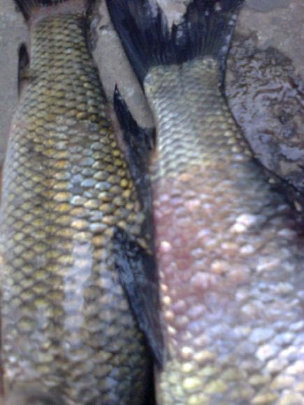
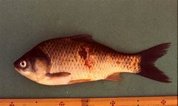

The Temperature range of the Rohu Fish is in between the 22-31°C
| Disease | Image | Medicine to cure | Company of Medicine |
|---|---|---|---|
| Bacterial infections |  | Amoxicillin,Doxycycline,Cephalexin,Ciprofloxacin,Clindamycin,Metronidazole, Azithrommycin and trimethoprim |
Pfizer,Merck and GlaxoSmithKline |
| Columnaris Disease |  |
Copper Sulfate,Acrinflavine,Furan,Terramycin,Nitrofurazone and Kanamycin | Erythomycin and Tetracyclin |
| Aeromoniasis |  | Trimethoprism-sulfamethoxazole(TMP-SMX),Fluroquinolones,second-and third-generation cephalosporins |
Virbac,Zeotis and Bayer |
| Dropsy Disease |  |
Mardel,xMaracyn® 2 and KanaPlex™ | Pfizer,Novartis and AstraZeneca |
| Disease | Image | Medicine to cure | Company of Medicine |
|---|---|---|---|
| Fungal infections |  |
Maracyn, Ich-X, salt,Nova-Zyme F | Formalin,Malachite Green and Pfizer |
| Respiratory infections |  |
lysozyme, myeloperoxidase, and Aeromonas hydrophila | Nutra Respiro and Tetracyclin |
| Cold Water Vibriosis |  |
lysozyme, myeloperoxidase | bacteriophages, and probiotics |
© 2023 Aquaculture Temperature Diseases
Follow our website on chrome